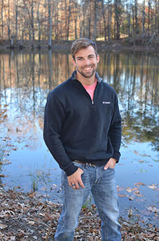

About Me

I have always been known as a jack-of-all-trades, knowing just a little bit about everything. I come from a multi-faceted background; son of a self-made business owner and general contractor and a director of marketing. Times at the dinner table lead to some very diverse conversations, yet they never seemed to conclude with whose job was more challenging. During my final years of high school, I jumped at the opportunity to take the first Computer Science course offered in my district, focused in Object-Oriented Programming. Immediately, I knew that this was the field that I could offer my full devotion, skillset and creativity to. During my first few years of college, as an “Undeclared Engineering” student at North Carolina State University, I was on track to becoming a Computer Scientist, interviewing with companies such as Oracle + Bronto my freshman year. However, whenever it came time to matriculate into a subset of engineering, I was given second-choice of Civil Engineering.
Fast-forwarding to the present, the opportunity has presented itself to reunite with my true passion. Currently, I am enrolled in the University of North Carolina at Chapel Hill’s – Full-Stack Development Boot Camp. Although, there is a long-road to pave ahead of me, I am consoled by my reignited interest and almost innate grasp of the course material. During the day, I am a Project Superintendent, building hundred of apartments every year. Through my profession, I have picked up key-traits such as; collaboration, organization techniques, leadership, scheduling, and recently, I have been gathering promotional content to use on our prospective web application. Even though I enjoy what I do, nothing gives me the same satisfaction as the ability to transcribe inspirations, whether a client’s or my own, into published content for the world to see.